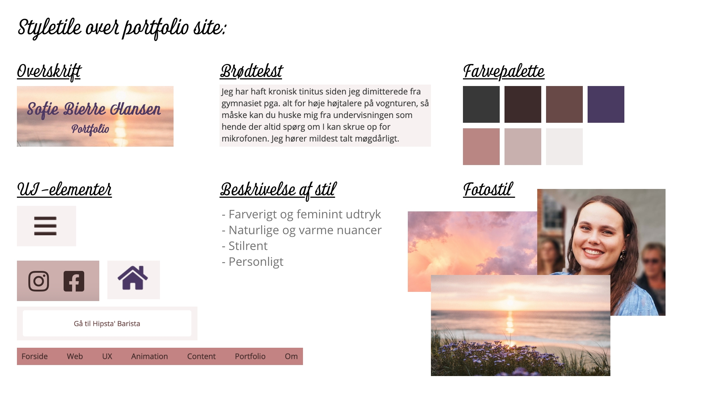

Tema 6
Portfolio eksamen
Jeg ville gerne have at mit portfolio skulle afspejle hvem jeg er som person, men stadig være relativt simpelt da det er et eksamensportfolio. Jeg elsker varme og lyserøde nuancer fordi jeg synes de udtrykker femininitet og sympati. Begge egenskaber jeg føler beskriver mig ret godt i dag. Dette skulle selvfølgelig præsenteres i min farvepalette. Til mine fonte har jeg valgt en feminin displayfont i script da det personlige aspekt skulle spille med ind over, og en helt simpel sans-serif til min brødtekst. Jeg har lavede wireframes over hver side for at planlægge hvordan mit portfolio skulle se ud i sin struktur før jeg tog nogle designvalg, og efterfølgende lavet layoutdiagrammer med overblik over mine kode for at se hvordan den skulle udføres. Jeg har efter konventioner valgt at placere min burgermenu i mobil oppe i venstre hjørne, og som én lang menubar i web hvor den er let tilgængelig. Endvidere har jeg i min footer den mest basale info både om mig og selve sitet og call-to-action navigation i mine knapper. Min h1, h2 og h3 står også i et størrelseshierarki man ofte ser med størst fontstørrelse ved h1 og derefter nedad. Mit store fokuspunkt under opbygningen af mit portfolio har været at få grid lidt mere under huden. Som man kan se på så sent som tema 4 kunne jeg ikke rigtig få de mest simple grids til at samarbejde med mig. Det har været så lærerigt at side med et større site og få det ned i fingrene.
